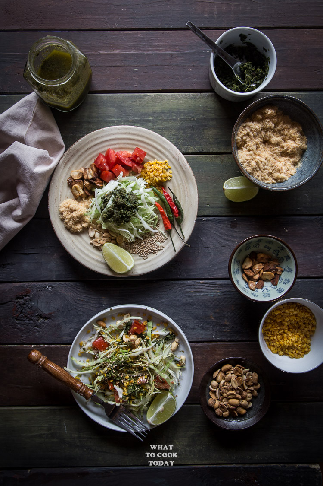

Tea Leaf Salad

Description
Fresh vegetables tossed in Pickled Tea Leaves dressing (Lahpet) and arrays of toppings that give you an amazing
texture, flavors, and taste. It’s hard to explain. You just have to try it to know what I mean!
Lahpet thoke, also known as “tea leaf salad,” is a popular and traditional dish from Myanmar (Burma). It is a
unique and flavorful salad made primarily from fermented tea leaves. The dish is a blend of various textures and
flavors and is considered a delicacy in Burmese cuisine.
Ingredients
- 2 cups thinly shredded cabbage
- 2 Roma tomatoes seeded and diced
- 3-4 Tbsp Laphet dressing
Garlic chips:
- 20 large cloves of garlic peeled and thinly sliced
- Cooking oil for frying
Fried yellow split peas:
- 1 cup yellow split peas soaked for at least 4 hours
- Cooking oil for frying
- Salt to taste
Shrimp Floss: (you can substitute with store-bought meat floss too)
- 1/2 cup dried shrimp soaked in warm water
Other toppings:
- 1/4 cup roasted peanuts
- Sesame seeds
- 2-3 red/green Thai chili finely chopped
Steps
Making garlic chips:
- Preheat about 1 inch of oil in a medium size pan. When the oil is hot, lower the heat to medium and add the
slices of garlic. Watch it closely and if the garlic browns too quickly, remove from the heat. Place the
fried garlic on an absorbent paper towel and store in a air-tight container
Making dried yellow split peas:
- Drain off the soaking water and pat them really dry with absorbent paper towel. Preheat about 2 inches of
oil in a medium size pan. When the oil is hot enough, add the split peas. They will bubble. Lower the heat
to medium and fry until they are slightly golden brown, about 15 minutes. Remove the peas to absorbent paper
towel. Season with some salt and store in a air-tight container
Making the shrimp floss:
- Soak the dried shrimp in warm water for about 15 minutes. Drain off water, pat them dry and put in a food
processor and process into a powder/floss like texture. Preheat a small to medium size pan on medium heat
and stir fry the shrimp floss on the dry pan until fragrant and dry, about 15-20 minutes. Remove from the
heat and store in the jar in the refrigerator for a month or so
- You can also ready-made pork floss from the store
Assembling the salad:
- This salad is typically served on a platter with sections to put in all the ingredients separately. I just
serve everything in one bowl. Place the cabbage and the rest of the ingredients in a large salad bowl. Mix
everything to make sure the veggies are coated with dressing. Topped with garlic chips, fried yellow split
peas, shrimp floss, and the rest of the toppings. Give it a final toss and serve